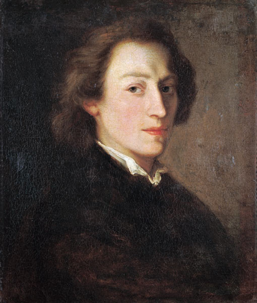

Chopin, Frédéric (1810-1849)
Compositor y pianista polaco nacido en Zelazowa Wola, cerca de Varsovia,
el 1 de marzo de 1810 y muerto en París el 17 de octubre de 1849. Hijo
de franceses emigrados a Polonia, Chopin fue un niño prodigio de la
música. Aprendió piano de su madre y a partir de los 5 años debutó en
conciertos benéficos e interpretaciones en salones aristocráticos,
aunque no fue hasta 1826, cuando inició sus estudios de música con Jozef
Elsner (antes había compuesto ya Polonesas). Trabó amistad con los
literatos del romanticismo polaco (Mochnaki, Zaleski, Witwicki, entre
otros) y adquirió conocimiento de la música popular polaca, a la par que
se relacionaba con la música de la época, tanto francesa como italiana.
A partir de 1828 realizó giras de conciertos en Alemania y Austria,
siendo acogido con entusiasmo, y en 1831 se estableció definitivamente
en París. En la capital francesa realizó una intensa y exitosa carrera
como pianista, dando a conocer principalmente sus propias obras. Se
dedicó fundamentalmente a la composición y a las clases de piano,
mediante las cuales se relacionó con Liszt, Rossini, Mendelssohn, Heine,
Balzac y otros, y de 1834 a 1836 viajó de nuevo por Centroeuropa. Ese
año conoció a la escritora George Sand, que marcaría profundamente su
vida. De 1838 a 1839 residió con ella en Mallorca y Génova, pero en 1847
se separaron. El desengaño afectó a su frágil salud, ya atacada por la
tuberculosis y la creciente nostalgia de su tierra polaca, y no
consiguió reponerse plenamente. Tras una gira de conciertos por Reino
Unido (1848), falleció en París. Enterrado en el Pére-Lachaise de esta
ciudad, su corazón fue trasladado a la iglesia de la Santa Cruz de
Varsovia.
